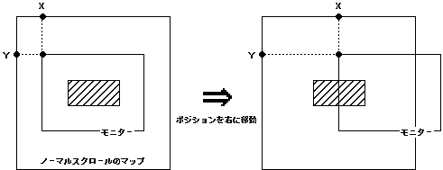

Return to previous page | Return to menu | Go to next page
void
Scroll function
NBG screen display position set
void slScrPosNbg0(x , y)
void slScrPosNbg1(x , y)
void slScrPosNbg2(x , y)
void slScrPosNbg3(x , y)
FIXED x ;
FIXED y ;
x X component of normal scroll arrangement coordinates (scroll coordinate system) y Y component of normal scroll arrangement coordinates (scroll coordinate system)
Place the normal scroll screen “NBG0-3” on the screen.
For the parameter, substitute the XY scroll coordinate value indicating the display position.
None
The display position designation of the normal scroll screen is imaged as shown below. (Place the monitor on the scroll map)

• The scroll display position is processed in the scroll coordinate system.
• This is a coordinate system with the origin at the top left of each scroll map.
-The scroll display position is specified by which position in this coordinate system the monitor is to be placed (the representative point is the upper left of the monitor)
-For this reason, if the scroll display position coordinate is moved in the positive X direction (right), the monitor will move to the right on the scroll map and
Apparently, the scroll appears to flow to the left.
Reference: Chapter 8 Scroll
slScrPosNbg0,1,2,3